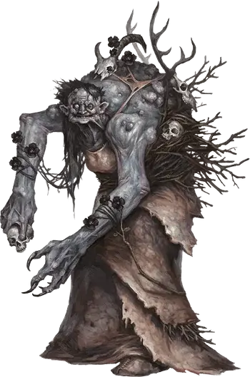

Карга аннис
Annis Hag
Большая Фея, хаотично-злая

Класс Доспеха 17 (природный доспех)
Хиты 75 (10к10 + 20)
Скорость 40 футов
| мод | спас | ||
|---|---|---|---|
| СИЛ | 21 | +5 | +5 |
| ЛОВ | 12 | +1 | +1 |
| ТЕЛ | 14 | +2 | +5 |
| мод | спас | ||
|---|---|---|---|
| ИНТ | 13 | +1 | +1 |
| МДР | 14 | +2 | +2 |
| ХАР | 15 | +2 | +2 |
Навыки Восприятие +5, Обман +5
Сопротивление урону холод; дробящий, колющий, рубящий от немагических атак
Чувства тёмное зрение 60 футов, пассивное Восприятие 15
Языки Общий, Великаний, Сильван
Опасность 6 (2300 опыта)
Бонус мастерства +3
Среда обитания Арктика, Горы, Побережье, Под водой, Пустыня
Особенности
Врождённое колдовство. . Врождённое колдовство карги основывается на Харизме (Сл спасброска от заклинаний 13). Она может накладывать следующие заклинания:
• 3/день каждое: маскировка [disguise self] (включая форму Среднего гуманоида), туманное облако [fog cloud].
Шабаш карг. Когда нужно работать сообща, несмотря на эгоизм, карги собираются в шабаши. В шабаш могут входить разные ведьмы, в нем они считаются равными. Тем не менее, каждая жаждет личной власти.
Шабаш — это три карги, и конфликт между двумя всегда может решить третья. Если встречается больше трех карг, например, когда возникает конфликт между несколькими шабашами, все погружается в хаос.
Карга аннис, которая является частью шабаша имеет показатель опасности 8 (3,900 опыта)..
Совместное колдовство. Если все три представительницы шабаша находятся в пределах 30 футов друг от друга, каждая может накладывать следующие заклинания из списка волшебника, но ячейки заклинаний у них общие на всех.
• 1 уровень (4 ячейки): луч болезни [ray of sickness], опознание [identify];
• 2 уровень (3 ячейки): поиск предмета [locate object], удержание личности [hold person];
• 3 уровень (3 ячейки): контрзаклинание [counterspell], молния [lightning bolt], проклятие [bestow curse];
• 4 уровень (3 ячейки): воображаемый убийца [phantasmal killer], превращение [polymorph];
• 5 уровень (2 ячейки): наблюдение [scrying], связь с иным миром [contact other plane];
• 6 уровень (1 ячейка): разящее око [eyebite].
При накладывании этих заклинаний каждая карга считается заклинателем 12 уровня, использующим Интеллект в качестве базовой характеристики. Сл спасброска от заклинаний равна 12 + модификатор Интеллекта карги, а бонус атаки заклинанием равен 4 + модификатор Интеллекта.
Глаз карги. Шабаш может создать магический предмет, называемый глазом карги, который делают из настоящего глаза, покрытого лаком, подвешенного на манер кулона. Обычно глаз доверяют помощнику, для сохранения и переноски. Карга в шабаше может действием посмотреть через этот глаз, если он находится на одном с ней плане. У глаза карги КД 10, 1 хит и тёмное зрение в радиусе 60 футов. Если его разрушить, все члены шабаша получают 3к10 урона психической энергией и становятся ослепленными на 24 часа.
У шабаша может быть только один глаз одновременно, и создание нового требует проведения ритуала всеми тремя участницами. Ритуал занимает 1 час, и карги не смогут совершить его, будучи слепыми. Если во время совершения ритуала какая-нибудь карга совершает любое лишнее действие, шабаш должен начинать ритуал заново.
Альтернативные заклинания ковена. Некоторые ковены формируются для достижения определенной цели, например, для победы над чемпионом добра, становления оракулами и получении зловещих пророчеств или для развращения нетронутой глуши. В таком случае, так как ковен старается направить свою магию на более конкретную цель, то его члены имеют различные заклинания и черту Совместное Колдовство, обычно направленное на тему, относящуюся к этой цели. Три примера тематических списка заклинаний ковена карг приведены ниже. (Volo’s Guide to Monsters)
Смерть. Для ковена, чьи члены одержимы смертью и способностью ею манипулировать, подходящим списком заклинаний будет:
• 1 уровень (4 ячейки): псевдожизнь [false life], нанесение ран [inflict wounds];
• 2 уровень (3 ячейки): нетленные останки [gentle repose], луч слабости [ray of enfeeblement];
• 3 уровень (3 ячейки): восставший труп [animate dead], возрождение [revivify], разговор с мёртвыми [speak with dead];
• 4 уровень (3 ячейки): усыхание [blight], защита от смерти [death ward];
• 5 уровень (2 ячейки): заражение [contagion], оживление [raise dead];
• 6 уровень (1 ячейка): круг смерти [circle of death].
Природа. Карги хотят контролировать окружающую среду и существ в ней посредством мастерства над следующими заклинаниями:
• 1 уровень (4 ячейки): опутывание [entangle], разговор с животными [speak with animals];
• 2 уровень (3 ячейки): пылающий шар [flaming sphere], лунный луч [moonbeam], шипы [spike growth];
• 3 уровень (3 ячейки): призыв молнии [call lightning], рост растений [plant growth];
• 4 уровень (3 ячейки): подчинение зверя [dominate beast], цепкая лоза [grasping vine];
• 5 уровень (2 ячейки): нашествие насекомых [insect plague], древесный путь [tree stride];
• 6 уровень (1 ячейка): терновая стена [wall of thorns].
Пророчество. Сила менять будущее или предвидеть вещи, может сделать такие заклинания привлекательными для ковена:
• 1 уровень (4 ячейки): порча [bane], благословение [bless];
• 2 уровень (3 ячейки): гадание [augury], обнаружение мыслей [detect thoughts];
• 3 уровень (3 ячейки): подсматривание [clairvoyance], рассеивание магии [dispel magic], необнаружимость [nondetection];
• 4 уровень (3 ячейки): магический глаз [arcane eye], поиск существа [locate creature];
• 5 уровень (2 ячейки): обет [geas], знание легенд [legend lore];
• 6 уровень (1 ячейка): истинное зрение [true seeing].
Действия
Мультиатака. Аннис совершает три атаки: одну укусом и две когтями.
Укус. . Рукопашная атака оружием: +8 к попаданию, досягаемость 5 футов, одна цель. Попадание: 15 (3к6 + 5) колющего урона.
Когти. . Рукопашная атака оружием: +8 к попаданию, досягаемость 5 футов, одна цель. Попадание: 15 (3к6 + 5) рубящего урона.
Сокрушительные объятия. Рукопашная атака оружием: +8 к попаданию, досягаемость 5 футов, одна цель. Попадание: 36 (9к6 + 5) дробящего урона и цель схвачена (Сл высвобождения 15) если она Большое существо или меньше. До окончания захвата цель получает 36 (9к6 + 5) дробящего урона в начале каждого хода карги. Карга не может совершать атак, пока держит в захвате существо таким образом.
Описание
Карги аннис живут в горах или на холмах. Не смотря на то, что они горбатые и сутулые, они самые большие и физически развитые среди всех карг и имеют около 8 футов роста.
Мучители Слабых. Хоть аннис карги и могут разорвать взрослого мужчину на части, они любят охотиться на детей, предпочитая их плоть всем остальным. Они используют содранную кожу таких жертв для всяческих изделий, а логово карги зачастую имеет признаки такой деятельности.
Карги аннис оставляют приметы своей жестокости на границах лесов и других областей в которых проживают. Поэтому они провоцируют страх и паранойю в окрестных деревнях и поселениях. Для карги аннис нет ничего более сладкого, чем превращение жизнерадостного сообщества в место, парализованное страхом, где народ никогда не гуляет по ночам,странников приветствуют с подозрение и злобой, а родители предупреждают детей: «Будьте хорошими, а то вас схватит аннис».
Развратительница Детей. Когда аннис чувствует особую жестокость, она маскируется под добро–выглядящую старушку, которая подходит к ребенку в уединенном месте и даёт железный жетон, который может использовать, чтобы ей доверились. Через некоторое время «Бабуля» убеждает ребенка, что иметь плохие мысли и делать плохие вещи – это нормально,начиная от разбивания вещей и до прогулок вне дома без разрешения, а потом можно и столкнуть кого–нибудь с лестницы или поджечь дом. Рано или поздно семья ребенка и сообщество начинают бояться «дурной крови» и должны принять ужасное решение наказать ребенка или изгнать.
Мать Племени. Примерно так же как они становятся друзьями с детьми, чтобы их развратить, карги аннис имеют тенденцию усыновления группы огров,троллей или других грубых существ, и управляют ими грубой силой, словесными ругательствами и суевериями.
Ковены. Карга аннис, которая является частью ковена (смотри врезку «Ковены Карг» в Бестиарии)имеет опасность 8 (3,900 опыта).
Железный жетон
Карга аннис может вытащить один из своих железных зубов или ногтей и потратить 1 минуту, формируя и полируя его в виде монетки, кольца или крошечного зеркальца. После этого, любое существо, которое держит этот жетон, может шепотом переговариваться с каргой, если существо и карга находятся на одном плане существования и не дальше 10 миль друг от друга. Держатель жетона может слышать лишь голос карги, но не существ около неё или окружающий её шум. Схожим образом карга слышит лишь держателя жетона, а не шум вокруг него.
Карга может иметь до трех активных жетонов единовременно. Действием она может определить направление и примерное расстояние до всех своих активных токенов. Она может мгновенно отключить любой из своих жетонов на любом расстоянии (действие не требуется), причем жетон оставляет свою форму, но теряет свои магические свойства.
См. дополнительно статью: "Бестиарий: Карги"